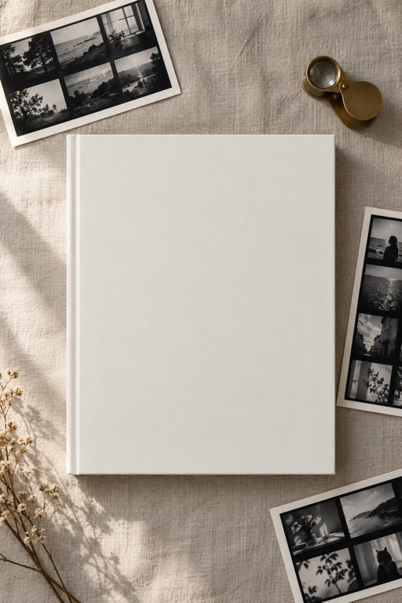
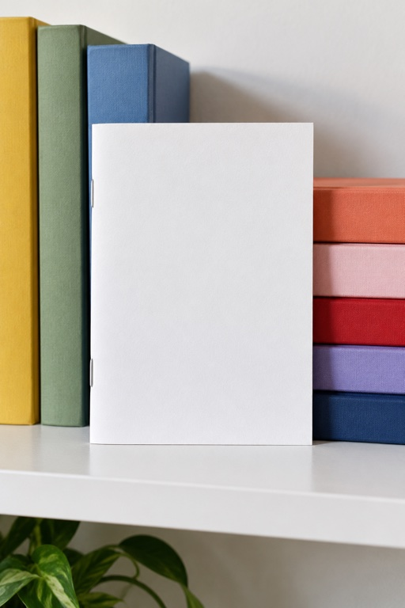
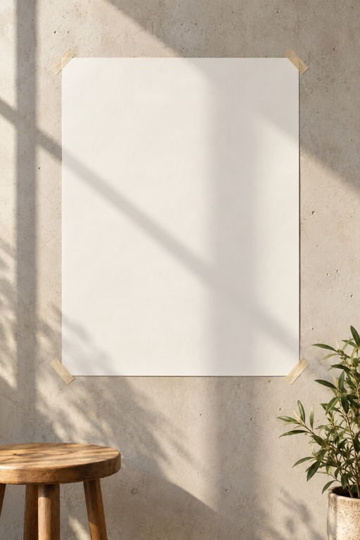
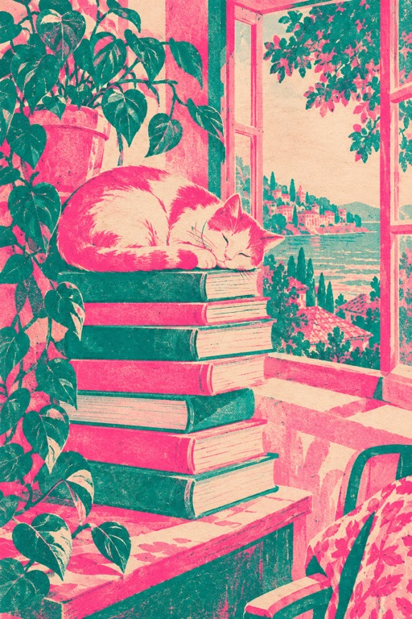
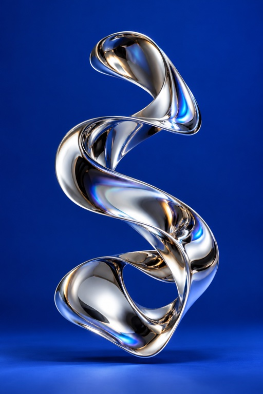
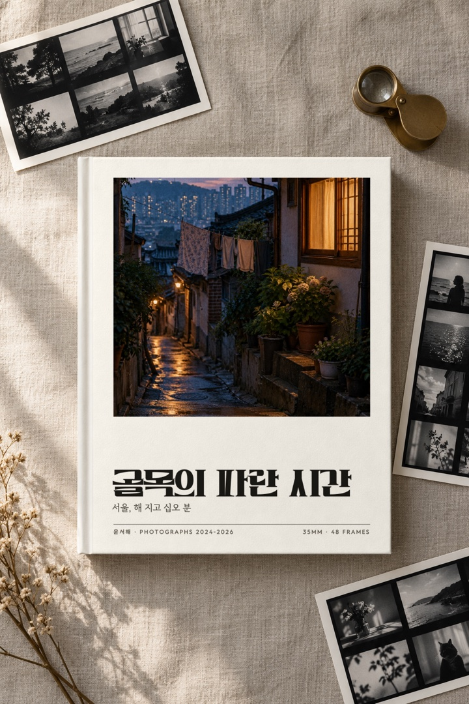

판정·댓글 장치·훅·폰트 라이선스·이미지 생성·AI 라벨 여섯 가지예요. 남의 게시물 그림은 공개 페이지에 싣지 않고 링크만 걸었어요. 판정자가 실제로 본 그림판은 옵시디언에 있어요.
반응 큰 게시물 첫 장 20장 사이에 우리 그림을 섞고, 판정자마다 순서와 파일명을 바꿨어요. 판정자는 22장(릴스 재판정은 21장)을 모두 열어 상위 5개와 하위 3개를 골랐어요. 우리 그림은 참고 그림과 같은 크기(512×640)로 줄였어요.
| 회차 | 판정자 | 우리 순위 | 본 장수 | 그 판정자의 상위 5 |
|---|---|---|---|---|
| 1차 | 판정자 1 | 캐러셀 첫 장 4위 | 22장 | 1. notefolio_font_477 → 2. trenddalkak_834c → 3. baehaus_491 → 4. 우리 캐러셀 → 5. baehaus_ai_1523 |
| 1차 | 판정자 2 | 캐러셀 첫 장 3위 | 22장 | 1. notefolio_font_477 → 2. trenddalkak_834c → 3. 우리 캐러셀 → 4. baehaus_491 → 5. baehaus_ai_1523 |
| 1차 | 판정자 3 | 캐러셀 첫 장 2위 | 22장 | 1. notefolio_font_477 → 2. 우리 캐러셀 → 3. trenddalkak_834c → 4. baehaus_491 → 5. googlefonts_7391 |
| 2차 | 판정자 1 | 캐러셀 첫 장 2위 | 22장 | 1. notefolio_font_477 → 2. 우리 캐러셀 → 3. trenddalkak_834c → 4. baehaus_491 → 5. baehaus_ai_1523 |
| 2차 | 판정자 2 | 캐러셀 첫 장 2위 | 22장 | 1. notefolio_font_477 → 2. 우리 캐러셀 → 3. trenddalkak_834c → 4. baehaus_491 → 5. baehaus_ai_1523 |
| 2차 | 판정자 3 | 캐러셀 첫 장 2위 | 22장 | 1. notefolio_font_477 → 2. 우리 캐러셀 → 3. baehaus_491 → 4. trenddalkak_834c → 5. googlefonts_7391 |
| 릴스 재판정 | 판정자 4 | 릴스 표지 2위 | 21장 | 1. notefolio_font_477 → 2. 우리 릴스 → 3. baehaus_491 → 4. trenddalkak_834c → 5. kellys_329c |
| 릴스 재판정 | 판정자 5 | 릴스 표지 2위 | 21장 | 1. notefolio_font_477 → 2. 우리 릴스 → 3. baehaus_491 → 4. trenddalkak_834c → 5. googlefonts_7391 |
| 릴스 재판정 | 판정자 6 | 릴스 표지 2위 | 21장 | 1. notefolio_font_477 → 2. 우리 릴스 → 3. baehaus_491 → 4. trenddalkak_834c → 5. googlefonts_7391 |
섞은 참고 게시물 20개: aidori_2129c · aitrend_1008c · baehaus_355 · baehaus_491 · baehaus_ai_1523 · bbb_3183 · bysu_126 · framer_873 · goodtype_702 · googlefonts_7391 · googlefonts_8298 · grimiart_1145c · grimiart_412 · kellys_329c · notefolio_13K · notefolio_font_477 · remaincareer_cover_42 · thechrisdo_38K · trenddalkak_834c · tuisy_536c
10/30에 반응 큰 게시물 14개를 다시 열어 보니, 댓글 300개가 넘는 여섯 개는 모두 「댓글 남기면 ○○ 보내 드려요」를 썼어요(AI 도리 2,131 · 그리미아트 1,147 · 에트 1,012 · 트렌드딸깍 836 · 튜이지 536 · 켈리스 329). 디자인만 보여 준 글은 좋아요 1만 3천에도 댓글 295개, 구글 폰트는 8,301에 21개였어요. 표와 링크: 부족한 점 분석
샐리가 자료실에 담은 릴스 @grimiartdesign 「아직도?! 타이포효과 직접만드세요?」(10/14 게시, 10/27 확인 좋아요 418·댓글 3)의 「아직도?!」 꼴을 빌렸어요. 판정자 아홉 명 중 아홉 명이 우리 첫 장 이유로 이 훅을 꼽았어요.
| 폰트 | 원문 | SNS 이미지 | 영상(릴스) | 근거 |
|---|---|---|---|---|
| 더 우아한 세리프 | [허용] SNS 게시물 (이미지)· [별도 문의](유료 라이선스) 유튜브·광고(CF)·상업영화 등 영상물 | 가능 | 문의·유료 — 지금 릴스 첫 컷에 씀 | 눈누 라이선스 본문 · 피어타입 |
| GS혜자로운체 | 인쇄물, 광고, 패키지, 영상, 웹사이트 등 상업적·비상업적 목적으로 자유롭게 활용· 수정·변형하거나 수정본을 재배포 X | 가능 | 가능 | 눈누 라이선스 본문 · 배포처는 라이선스 파일은 공개 준비 중 |
| 레벨업 | 상업적인 용도를 포함해 무료로 쓸 수 있습니다(SIL OFL 1.1) | 가능 | 가능 | 하다 타입 |
| 말모이체 | 배포처 게시글엔 이용 범위 없음 · 눈누 누구나 사용할 수 있는 오픈 폰트입니다 | 확인 전 | 확인 전 | 한글학회 · 눈누 |
| HS효성체(장표 글씨) | 개인 및 기업의 상업적·비상업적 용도로 사용 가능· 허용 SNS 카드뉴스· 금지 서체를 활용한 로고(CI·BI) 제작 | 가능 | 자막 가능 | HS효성 |
| 빗썸고딕(강조 글씨) | 개인 및 상업적 용도로 무료 사용· 인쇄, 웹, 영상, 앱 등 모든 매체에 사용 | 가능 | 가능 | 빗썸 |
Codex의 내장 이미지 도구(로그에 기록된 도구 이름 image_gen)로 장면 4장과 작업 그림 3장을 만들었어요. 한글은 이미지 생성에 맡기지 않았어요. 빈 표지가 있는 장면만 만들게 하고, 표지 글자판은 직접 짜서 합성했어요. 아래는 생성 원본과 프롬프트 앞부분이에요.





생성 원본 — 표지가 비어 있어요

합성 뒤 — 직접 짠 표지를 바탕 밝기만큼 어둡게 해서 그림자를 살렸어요
메타는 업계 표준 AI 이미지 신호를 감지하거나 올린 사람이 밝히면 「AI 정보」 라벨을 붙여요(Meta 뉴스룸, 지식창고 id aCwt3752tFaNpVNFrmKG_lYjRNaH1z4pL4ZbUIjsh_3). 장면 사진이 생성이라 올리면 라벨이 붙을 수 있어요. 회원 작업으로 바꾸면 줄어요.